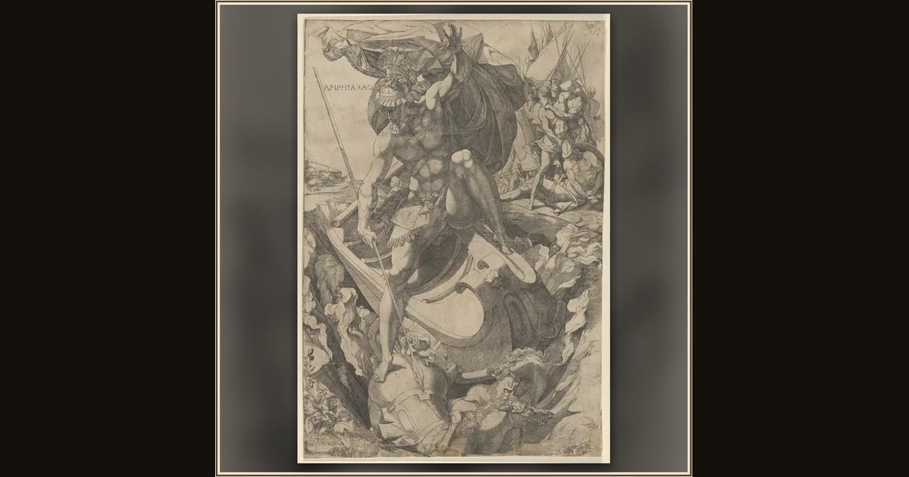

Amphiaraus
Domenico del Barbiere (Italian, Florence (?) 1506–1565 Paris) · 1540–50 · met
Amphiaraus, identified by name in the engraving, descends with his chariot into the earth; the seer says he will lie buried beneath enemy soil (587). Explore its place in Aeschylus's Plays, Seven Against Thebes, line 573.